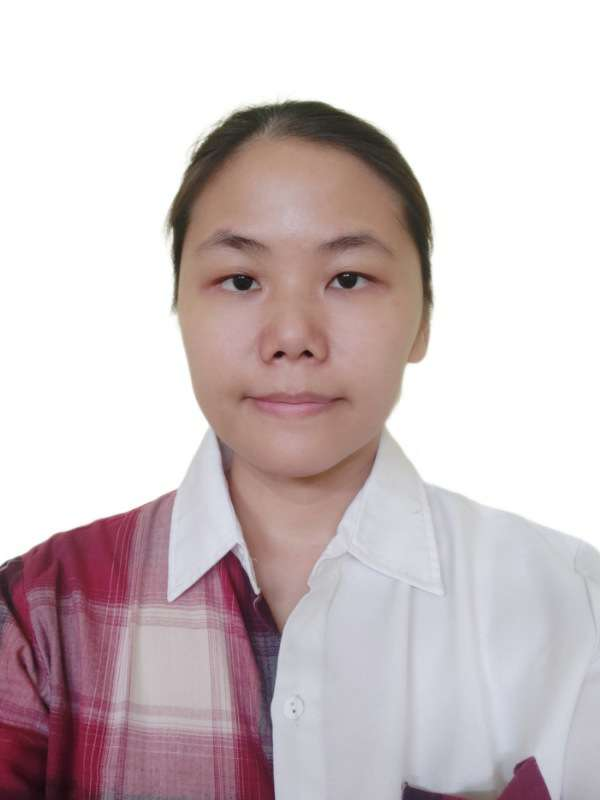

My Online Resume

Kresentia Adela Gunawan
My Contact | My Hobbies
Summary
Kresentia is a Web Developer with 9 years of experience building, designing, and launching well functional websites for client businesses, specializing in HTML5, JavaScipt, PHP, MySQL, database design, frontend and backend development. Adept with collaborating with dynamic teams to build high-quality websites and identify oppurtunities to enhance the user experience.
Education
University of Bunda Mulia | 2011 - 2015
Bachelor of Computer Science, IPK 3.6
Work Experience
-
Programmer | PT Lintas Batas Indonesia | 2015 - current
responsibilities :
- Developing both the front-end and backend components of the website.
- Develop and maintain websites and web applications, ensuring they are visually appealing, user-friendly, and responsive across various devices.
- Ensuring the seamless operation of websites by performing tasks such as updating pages, inputing new data, resolving bugs, and integrating innovative systems.
- Designing and implementing databases for websites.
-
Content Inputer | PT Media Fokus Edukasindo | 2015 - 2015
responsibilities :
- Creating content by summary high school book that will be used for making educaonal video
-
IT Support | University of Bunda Mulia | 2014 - 2014
responsibilities :
- Creating content for both social media platforms and blogs.
- Verifying the Wi-Fi internet connectivity within the building.
Skill
- HTML
- CSS
- PHP
- JavaScript
- MySQL
- Adobe Photoshop
- Adobe InDesign
- Microsot Word, Excel, Power Point
- Yii1, Yii2
Language